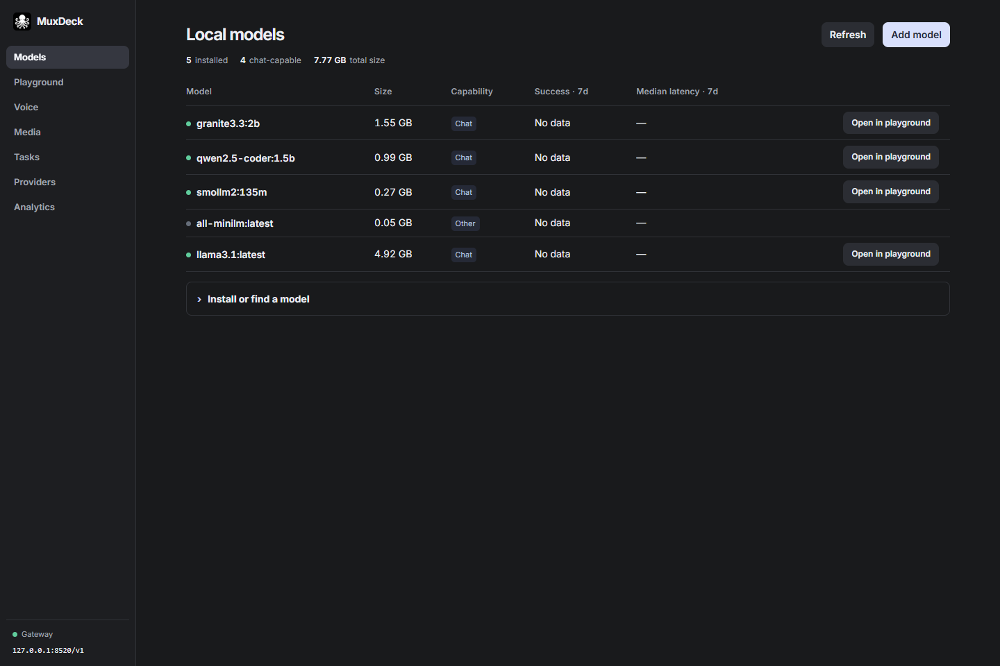
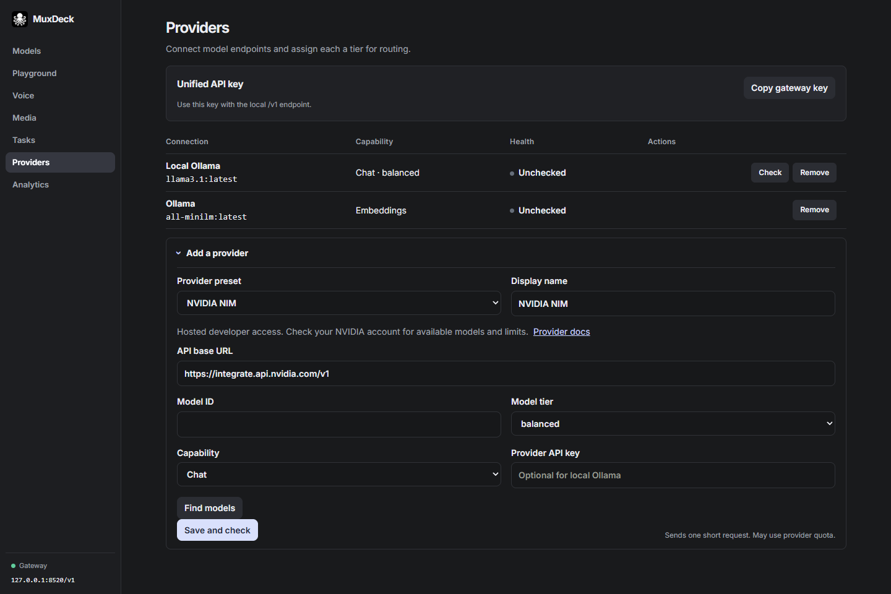
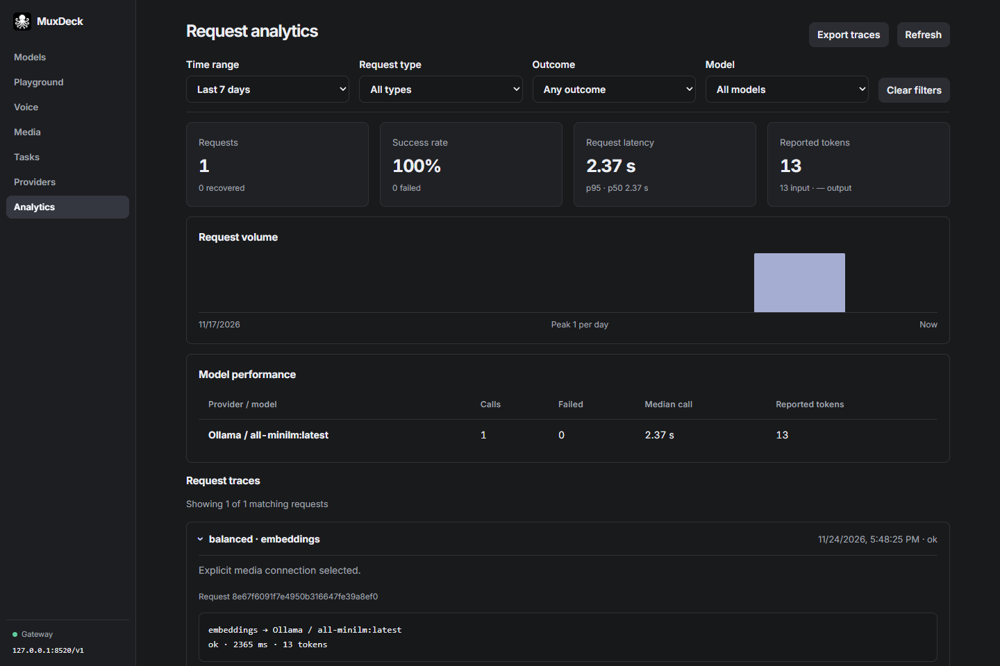
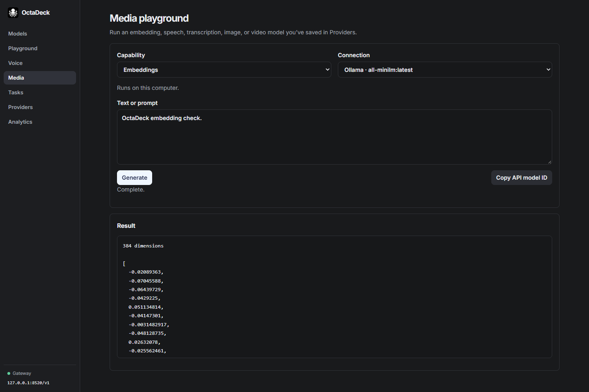

Run models locally
Install Ollama models from the dashboard. Bring code files into the Playground, then review an edit before saving it.
Run models on your PC. Connect your cloud providers. Give your tools one API and see where every request goes.
Windows x64 Local models powered by Ollama



Connect chat, embeddings, speech, image, and video models where your provider supports them.
Install Ollama models from the dashboard. Bring code files into the Playground, then review an edit before saving it.
Connect your providers once. Route a request automatically or choose a model tier for the job.
See which model handled a call, how long it took, and where a fallback or validation step happened.
For developers
Use the OpenAI-compatible chat endpoint from a script or another local app. Copy your gateway key from Providers and use auto to let OctaDeck pick a tier.
$key = Read-Host "OctaDeck gateway key" -MaskInput
$body = @{
model = "auto"
messages = @(@{
role = "user"
content = "Explain routing in one sentence."
})
} | ConvertTo-Json -Depth 5
Invoke-RestMethod `
-Uri "http://127.0.0.1:8520/v1/chat/completions" `
-Method Post `
-Headers @{ Authorization = "Bearer $key" } `
-ContentType "application/json" `
-Body $bodyWindows x64
Install the desktop app, open its shortcut, and connect your first model. Install Ollama separately to run models on your PC.
Unsigned Windows x64 installer